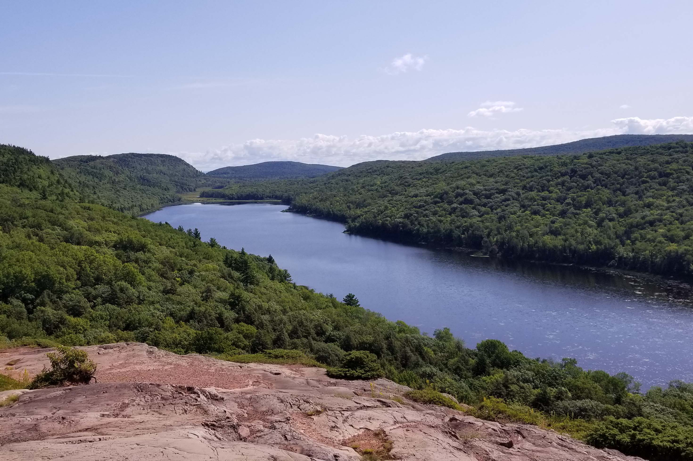
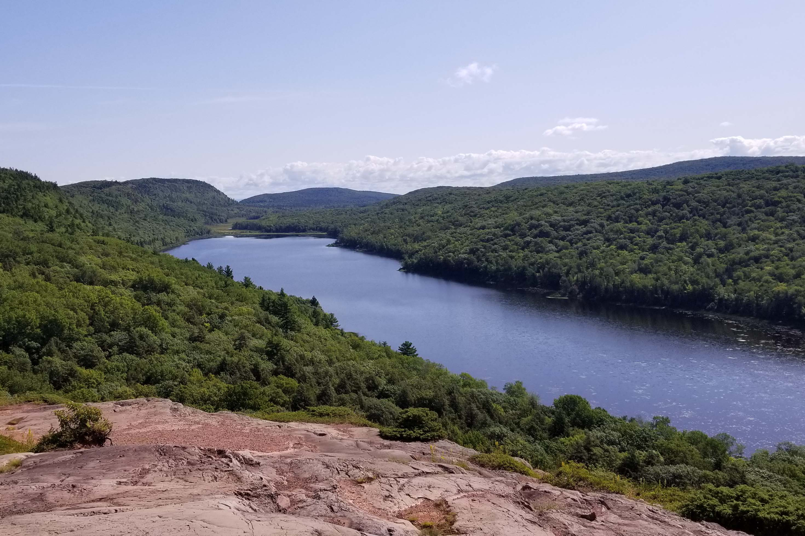

Colorado is a great place to explore. The state offers beautiful views of mountains and great opportunities to see wildlife. You can see everything from a moose to a praire dog in this state. Colorado also offers many opportunites for adventure. You can either take a scenic drive or climb a mountain, go whitewater rafting or enjoy a sunset in the mountains.


Florida is the place to go for all the ocean fun you want. The state has beautiful sand and shelling beaches, sunsets, and wildlife. You can see hermit crabs, dolphins, horseshoe crabs, and more! The state also creates a great environment to either spend time by the water's edge or inland in the state parks.
Maine is home to both forests and the ocean making it an exciting place to spend your vacation. You can take a exploritory hike through the woods or along the coast, watch whales, or explore a lighthouse. Maine is a beautiful state and it will surprise you with its treasures.
 

Michigan is an awesome location if you are looking for forests, dunes, and a great lakes. The great lakes are a great way to appreciate a large body of water without haveing to make the treck to the ocean. While in Michigan you will be able to see lighthouses, waterfalls, and lookout points.
Tennessee is a lush hilly and mountainous state. It is home to the Smokey mountains and numerous waterfalls. You might spot salamandars or black bears here. The state has scenic drives, and hikes that bring you through its beautiful parks.


Wisconsin is home to green forests, a great lake, and many smaller lakes. You may see deer, turkey, eagles, and more. The state is a great place to explore as you can do anything from a wine tour to waterskiing.

Wyoming is a pretty state with mountain ranges and amazing views. Wyoming provides adventurists with the opportunity to explore UTV/snowmobile trails, bike, hike, and more. You can also find prime picnic spots that will give you wonderful views of the surrounding landscape and keep your eyes open for wildlife.